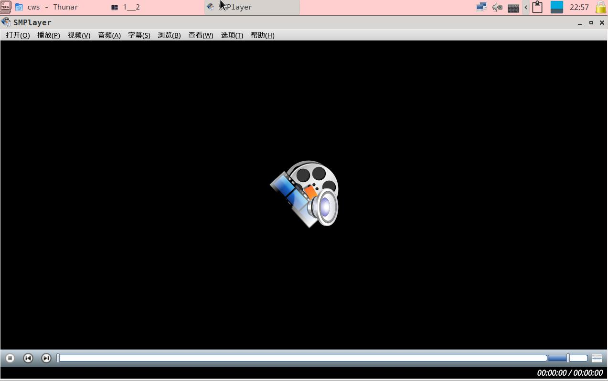
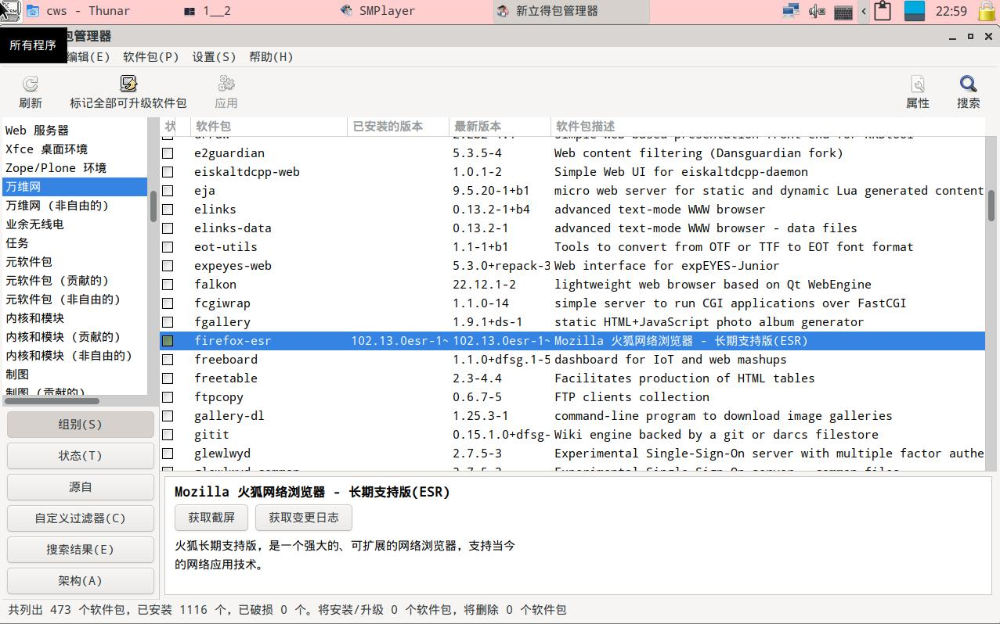
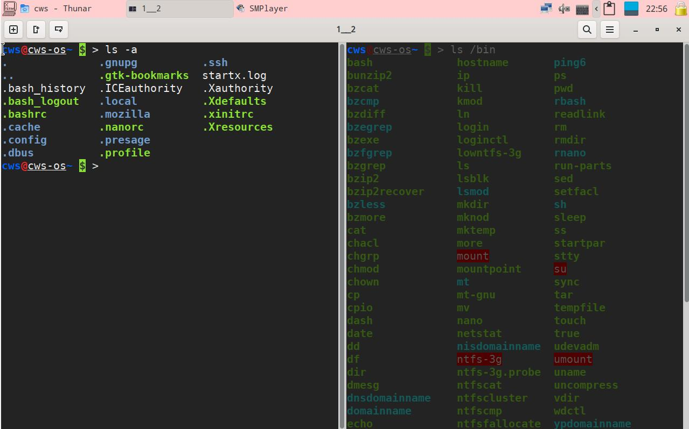
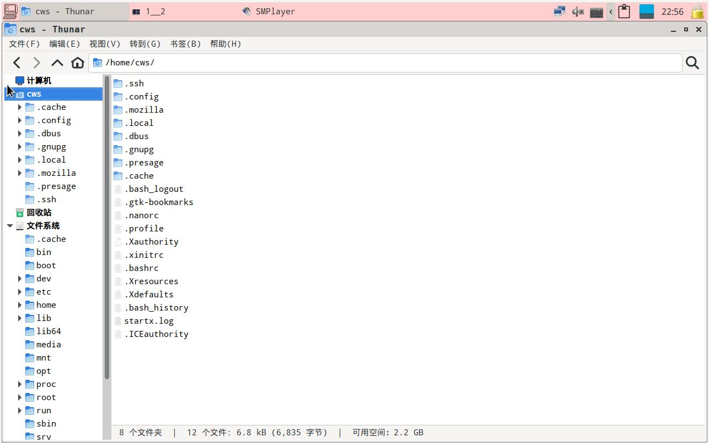

DQR-OS,可用,好用,易用的开源操作系统
地球人---
Di Qiu Ren -->
DQR
DQR-OS是一个好用易用的操作系统,适用于大多数地球人的系统;它开源,安全,可自由使用,无需付费就可使用;它由多个地球人的创作集结而成,这是一项伟大的工程.
下载地址
https://www.123pan.com/s/xIE8Vv-KqT5H.html
CWSDEVOS_X64_uefi_bios_USER_cws_PASSWD_qweasd_2023-03-05.iso
sha512sum : 142f2711bc1563534662eb5130d2b2c63b62c31be525b44aeabfd4d4326e7ea87d9310a35d750e7e41e4a84e84103ad3675c4d7c062560640b2be8b01f3e0512
CWSDEVOS_X64_uefi_bios_USER_cws_PASSWD_qweasd_2023-08-02.iso
sha512sum : b34732ed37e553bce25b73c79e3cbe7147fbeade1321947d91d4c7830c614c35e1eb8b19aa797bc271cd2e504be9b94995772ae2bfd9f7693e4a8135336c38b0
DQR-OS_X64_uefi_bios_USER_cws_PASSWD_qweasd_2023-11-05.iso
sha512sum : b8009afe8becba98217086fcbfadd39a6defdc62597a4e716a79d4f65ce435ad7f1eeb0318d2afcc6154ffadbdb3395b4ca85cacb9b55d95433de3fd07480df4
桌面截图:
支持很多格式的音视频播放器--smplayer

app浏览搜索--synaptic

多窗口多标签的终端--tillix

多标签,容易定制右键菜单的文件管理--Thunar

创建时间 : 2023-03-05
修改时间 :
说明 : No
参考网址 :
www.devuan.org
www.linux-live.org